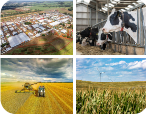

Leowa Associates delivers world-class management consulting and ICT solutions across Kenya, Uganda, and Tanzania — backed by 20+ years of regional expertise.
Strategic planning, capacity building & institutional development across East Africa.
Custom ERP systems, SYSCOOP Agri, bookkeeping software & bulk SMS tools.
End-to-end digital platforms for curriculum, assessment, attendance & reporting.
Digitizing coffee, dairy & cereal value chains for cooperatives & smallholder farmers.
Trusted by leading organizations across East Africa
What We Do
We provide end-to-end professional services designed to help organizations grow, improve efficiency, and achieve lasting impact across East Africa.
We help organizations streamline operations, strengthen governance structures, and build the internal competencies needed for long-term sustainability.
Rigorous M&E assignments for international development agencies — measuring impact, tracking outcomes, and informing data-driven decision-making.
From concept design to final delivery, we manage complex projects with alignment to donor requirements, ensuring quality and timeliness at every stage.
Specialized management training programs tailored to organizational needs — from leadership development to technical skills for teams and institutions.
We formulate clear strategic roadmaps, business development proposals, and investment cases that align with organizational goals and funder priorities.
Comprehensive digital platforms for schools — covering curriculum planning, teaching & learning, assessment, attendance, reporting, and parent communication.
Our Products
Purpose-built software systems designed for African cooperatives, agri-businesses, and institutions — digitizing operations from farm to payment.

Client Voices
Real feedback from organizations we've partnered with across East Africa.
SYSCOOP Agri cut our payment processing time to just 2 days and reduced member payment complaints by over 70%. It transformed how we run our cooperative.
The capacity building program transformed how our team approaches strategic planning. We now have clear frameworks and measurable goals that drive real results.
Their M&E framework helped us report with confidence to USAID. The Leowa team brought deep expertise and met every deadline without fail.
Start Today
Whether you need a consulting engagement, a custom ICT solution, or a school management platform — we're ready to help you succeed.